C2 Container Diagram
สถาปัตยกรรมของระบบ Scam Image Detection ถูกออกแบบภายใต้แนวคิด Cloud-Native Architecture โดยงาน AI หนักแยกเป็น ONNX Worker subprocess เพื่อให้ระบบสามารถรองรับการประมวลผลข้อมูลรูปภาพและโมเดลปัญญาประดิษฐ์ ซึ่งใช้ทรัพยากรการคำนวณสูง ไ…
C2: Container Diagram

ดู Mermaid source
flowchart TB
%% การตั้งค่า Class สีต่างๆ
classDef userFill fill:#fff2cc,stroke:#d6b656,color:black
classDef clientFill fill:#dae8fc,stroke:#6c8ebf,color:black
classDef backendFill fill:#d5e8d4,stroke:#82b366,color:black
classDef storageFill fill:#ffe6cc,stroke:#d79b00,color:black
classDef extFill fill:#f5f5f5,stroke:#666666,color:black
%% Actors Boundary
User("General User<br>[Person]<br>ผู้ใช้งานทั่วไป")
Admin("Admin<br>[Person]<br>ผู้ดูแลระบบ")
%% System Boundary
subgraph ScamSystem [Scam Image Detection - System Boundary]
direction TB
subgraph Frontends [Frontend Layer]
MobileApp("Mobile App<br>[Container: Flutter]<br>อัปโหลดและเลือกรูปภาพ,<br>แสดงผลคะแนนความเสี่ยง (Risk Score)")
AdminPortal("Admin Web Portal<br>[Container: React + Admin UI]<br>จัดการผู้ใช้ (ดู+เปิด/ปิดบัญชี), ตรวจสอบสแกมที่รายงาน,<br>จัดการชุดข้อมูล, อัปเดตโมเดล")
end
subgraph Backends [Backend & API Layer]
APIGateway("API Application<br>[Container: Python FastAPI]<br>จัดการ Logic หลัก, ดึง Metadata,<br>ตรวจสอบ OCR")
AIInference("ONNX Worker<br>[Subprocess]<br>ตรวจการตัดต่อ (Semantic Segmentation),<br>เช็คว่าเป็นภาพ AI")
end
subgraph Storages [Storage & Cache Layer]
Cache("Cache<br>[Container: Redis]<br>เก็บผลตรวจชั่วคราว (Cache Hit)<br>เพื่อลดเวลาประมวลผลซ้ำ")
ObjectStore("Object Storage<br>[Container: Cloud Storage]<br>เก็บไฟล์รูปภาพต้นฉบับ,<br>ภาพ Heatmap")
MainDB[("Main Database<br>[Container: PostgreSQL]<br>เก็บข้อมูลผู้ใช้, ประวัติการสแกน,<br>ผลลัพธ์ (Risk Score)")]
end
end
%% External Systems Boundary
subgraph Externals [External Services]
PushService("Push Notification Service<br>[External System: FCM]<br>แจ้งเตือนผลลัพธ์กลับไปยังแอป")
ReverseSearch("Reverse Image Search<br>[External System: Google Vision API]<br>ระบบค้นหาแหล่งที่มาของรูปภาพ")
end
%% Relationships / Associations
User -- "Uploads image & views result" --> MobileApp
Admin -- "Manages system" --> AdminPortal
MobileApp -- "API Calls<br>[HTTPS / JSON]" --> APIGateway
AdminPortal -- "API Calls<br>[HTTPS / JSON]" --> APIGateway
APIGateway -- "เช็คประวัติการสแกน" --> Cache
APIGateway -- "ส่งตรวจร่องรอย / AI<br>[Subprocess IPC]" --> AIInference
APIGateway -- "จัดเก็บ / ดึงรูปภาพ" --> ObjectStore
APIGateway -- "บันทึกผลลัพธ์ขั้นสุดท้าย" --> MainDB
APIGateway -- "แจ้งเตือนเมื่อ Timeout / ประมวลผลเสร็จ<br>[HTTPS]" --> PushService
APIGateway -- "ค้นหาแหล่งที่มา<br>[HTTPS]" --> ReverseSearch
%% Apply Styles
class User,Admin userFill
class MobileApp,AdminPortal clientFill
class APIGateway,AIInference backendFill
class Cache,ObjectStore,MainDB storageFill
class PushService,ReverseSearch extFill
คำอธิบาย Container Diagram
สถาปัตยกรรมของระบบ Scam Image Detection ถูกออกแบบภายใต้แนวคิด Cloud-Native Architecture โดยงาน AI หนักแยกเป็น ONNX Worker subprocess เพื่อให้ระบบสามารถรองรับการประมวลผลข้อมูลรูปภาพและโมเดลปัญญาประดิษฐ์ (ซึ่งใช้ทรัพยากรการคำนวณสูง) ได้อย่างมีประสิทธิภาพ โดยไม่ส่งผลกระทบต่อความเร็วในการตอบสนองของแอปพลิเคชัน ภายในขอบเขตของระบบ (System Boundary) ประกอบด้วยคอนเทนเนอร์หลัก 3 ส่วน ดังนี้:
1. ส่วนติดต่อผู้ใช้งาน (Frontend Containers)
-
Mobile App (Flutter):
- บทบาท: แอปพลิเคชันบนสมาร์ทโฟนสำหรับผู้ใช้งานทั่วไป (General User) ทำหน้าที่เป็นส่วนเชื่อมต่อหลักให้ผู้ใช้สามารถเลือกและอัปโหลดรูปภาพที่น่าสงสัย
- หน้าที่: ส่งข้อมูลรูปภาพไปยัง API Application และรับการแสดงผลลัพธ์กลับมาเป็นคะแนนความเสี่ยง (Risk Score) พร้อมคำอธิบายและภาพแผนที่ความร้อน (Heatmap) แสดงจุดที่ผิดปกติ
- เทคโนโลยี: Flutter (รองรับ Android)
-
Admin Web Portal (React + Admin UI):
- บทบาท: เว็บแอปพลิเคชันสำหรับผู้ดูแลระบบและนักวิจัย (Admin / Researcher)
- หน้าที่: ใช้เป็นหน้าจอควบคุมและตรวจสอบสถานะระบบหลังบ้าน (Dashboard) การจัดการสิทธิ์ของผู้ใช้ (ดู + เปิด/ปิดบัญชี), ตรวจสอบรูปภาพสแกมที่ผู้ใช้ส่งรายงานเข้ามา (Scam Reports), จัดการคลังชุดข้อมูล (Dataset) และการอัปโหลดไฟล์น้ำหนักโมเดล AI (Model Weights)
- เทคโนโลยี: React.js + TailwindCSS (หรือ Admin Template สำเร็จรูป)
2. ส่วนประมวลผลหลัก (Backend Containers)
-
API Application (Python FastAPI):
- บทบาท: ทำหน้าที่เป็น API Gateway และตัวควบคุมการประสานงานหลัก (Orchestrator)
- หน้าที่: จัดการตรรกะทางธุรกิจหลัก (Core Business Logic) ทั้งหมด เช่น การยืนยันตัวตน, จัดการข้อมูลผู้ใช้, ดึงข้อมูลเมทาดาตาแฝงของรูปภาพ (Metadata/EXIF Extraction), และสั่งประมวลผลสกัดตัวอักษรในภาพ (OCR) จากนั้นประสานงานส่งข้อมูลไปยังบริการวิเคราะห์ตัวอื่น ๆ
- เทคโนโลยี: Python FastAPI
-
ONNX Worker (subprocess):
- บทบาท: งานวิเคราะห์รูปภาพผ่านระบบปัญญาประดิษฐ์เชิงลึก (Deep Learning) รันแยกโปรเซสจาก FastAPI event loop
- หน้าที่: ประมวลผลรูปภาพเพื่อตรวจหาร่องรอยการแก้ไขภาพในระดับพิกเซลด้วย SegFormer ONNX (tiling 512/overlap 64) และตรวจสอบลักษณะทางกายภาพของภาพว่าถูกสร้างด้วยปัญญาประดิษฐ์ (AI-Generated Image) หรือไม่ พร้อมสร้างแผนที่ความร้อนแบบ mask-to-heatmap overlay
- เทคโนโลยี: ONNX Runtime; เรียกผ่าน IPC ภายใน Backend
3. ส่วนจัดเก็บข้อมูล (Storage Containers)
-
Cache (Redis):
- บทบาท: ฐานข้อมูลในหน่วยความจำชั่วคราวความเร็วสูง
- หน้าที่: จัดเก็บแคชของรูปภาพที่เคยผ่านการสแกนตรวจสอบแล้วเพื่อลดการประมวลผลซ้ำ (Cache Hit) ช่วยให้อุปกรณ์ของผู้ใช้รายอื่นที่ส่งรูปภาพเดิมเข้ามาได้รับผลวิเคราะห์แทบจะทันทีโดยไม่ต้องรัน AI ซ้ำ
- เทคโนโลยี: Redis Cache
-
Object Storage (Cloud Storage):
- บทบาท: แหล่งจัดเก็บไฟล์รูปภาพขนาดใหญ่
- หน้าที่: จัดเก็บไฟล์รูปภาพต้นฉบับที่ผู้ใช้อัปโหลดเข้ามา และรูปภาพแผนที่ความร้อน (Heatmap) ที่ส่งกลับมาจากบริการ AI เพื่อแสดงจุดผิดปกติ
- เทคโนโลยี: ระบบจัดเก็บไฟล์บนคลาวด์ (Cloud Storage)
-
Main Database (PostgreSQL):
- บทบาท: ฐานข้อมูลหลักเชิงสัมพันธ์ (Relational Database)
- หน้าที่: จัดเก็บข้อมูลที่มีโครงสร้าง เช่น ข้อมูลบัญชีผู้ใช้, บันทึกสิทธิ์การเข้าใช้งาน (RBAC), รายการประวัติสแกน, และข้อมูลการรายงานรูปภาพต้องสงสัย
- เทคโนโลยี: PostgreSQL
4. การเชื่อมต่อกับระบบภายนอก (External Systems)
-
Reverse Image Search (Google Vision API):
- บทบาท: บริการสืบค้นหาแหล่งที่มาของภาพย้อนกลับ
- หน้าที่: API Application จะส่งคำขอเพื่อตรวจสอบว่ารูปภาพที่ผู้ใช้อัปโหลดมานั้น เคยถูกเผยแพร่ในอินเทอร์เน็ตที่เว็บไซต์ใดมาก่อนหน้านี้หรือไม่ เพื่อตรวจสอบบริบทความสอดคล้อง (เช่น รูปโปรไฟล์จริง หรือรูปดาราที่มิจฉาชีพนำมาแอบอ้าง)
- เทคโนโลยี: Google Vision API / Bing Visual Search
-
Push Notification Service (Firebase Cloud Messaging - FCM):
- บทบาท: ระบบส่งการแจ้งเตือนพุชไปยังผู้ใช้
- หน้าที่: ในกรณีที่การสแกนตรวจสอบภาพในฝั่ง AI Inference Service ใช้เวลาประมวลผลนานกว่าปกติ หรือเกิดปัญหารอคิว ระบบจะทำงานเป็นแบบ Asynchronous โดย API Application จะส่ง Payload ไปยัง FCM เพื่อแจ้งเตือนกลับไปยัง Mobile App ของผู้ใช้งานเมื่อประมวลผลวิเคราะห์เสร็จสมบูรณ์
- เทคโนโลยี: Firebase Cloud Messaging